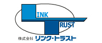
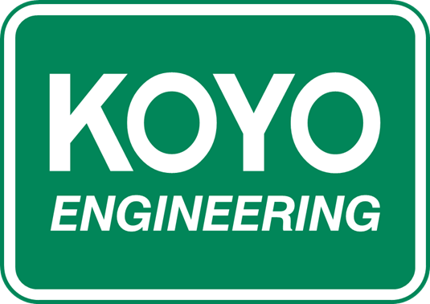
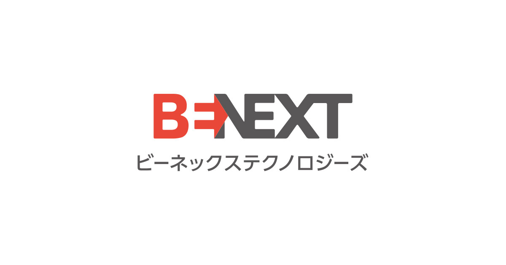

01
NẮM BẮT CƠ HỘI TUYỂN DỤNG
Tiếp cận hệ thống job kỹ sư tại Nhật Bản được cập nhật liên tục, phù hợp với nhiều cấp độ và chuyên môn khác nhau, giúp bạn dễ dàng lựa chọn vị trí để giới thiệu ứng viên.
Cộng tác viên JobShare
Đồng hành cùng doanh nghiệp trong hành trình tìm kiếm ứng viên nước ngoài phù hợp. Bạn giới thiệu ứng viên phù hợp, JobShare hỗ trợ hệ thống theo dõi minh bạch và chi trả hoa hồng rõ ràng.
Tiếp cận hệ thống job kỹ sư tại Nhật Bản được cập nhật liên tục, phù hợp với nhiều cấp độ và chuyên môn khác nhau, giúp bạn dễ dàng lựa chọn vị trí để giới thiệu ứng viên.
Theo dõi toàn bộ quá trình giới thiệu ứng viên từ lúc apply đến khi trúng tuyển. Mọi trạng thái đều được cập nhật minh bạch, giúp bạn chủ động tối ưu hiệu suất làm việc.
Làm việc trực tiếp cùng đội ngũ Workstation trong suốt quy trình tuyển dụng, đồng thời tận dụng các công cụ AI như gợi ý việc làm và tạo hồ sơ ứng viên theo chuẩn, giúp tăng tỷ lệ thành công.
Lợi thế khi tham gia hệ sinh thái cộng tác viên JobShare: chính sách minh bạch, quy trình đơn giản, và đội ngũ chuyên viên đồng hành xuyên suốt.
Cộng tác viên được chia sẻ phần trăm phí giới thiệu theo cơ chế minh bạch. Thành tích tốt sẽ giúp bạn thăng hạng và tăng tỷ lệ hoa hồng lên đến 50%.
Khởi điểm
Tối đa
Bạn chỉ cần biết ai đang tìm việc, mọi quy trình còn lại như tư vấn, sửa CV, phỏng vấn... sẽ được đội ngũ JobShare hỗ trợ.
Đội ngũ chuyên nghiệp sẽ hỗ trợ bạn xử lý yêu cầu tuyển dụng kỹ sư Nhật, đảm bảo thông tin minh bạch và hiệu quả tuyển dụng cao.
JobShare cung cấp nguồn job tuyển dụng kỹ sư từ các doanh nghiệp Nhật đã được xử lý và chuẩn hóa. Bạn có thể chọn job phù hợp và bắt đầu tiến cử ứng viên ngay mà không cần tự tìm kiếm khách hàng.

Đọc kỹ Quy định & Chính sách sử dụng nền tảng JobShare dành cho cộng tác viên, sau đó điền form đăng ký. Hệ thống sẽ ghi nhận và liên lạc qua mail đã đăng ký.
Cộng tác viên tìm ứng viên phù hợp với điều kiện ứng tuyển của mỗi việc làm đang tuyển, sau đó điền thông tin ứng tuyển và form tiến cử. cộng tác viên cần đảm bảo rằng thông tin ứng viên tiến cử là chính xác và đã được sự đồng thuận rõ ràng từ chính ứng viên trước khi gửi cho JobShare.
Sau khi tiến cử ứng viên, cộng tác viên sẽ theo dõi quá trình tiến cử qua hệ thống JobShare, hỗ trợ ứng viên trong quá trình phỏng vấn và bổ sung thông tin khi cần thiết. Khi ứng viên được tuyển dụng thành công, cộng tác viên sẽ nhận được khoản hoa hồng tương ứng theo cơ chế minh bạch và rõ ràng.
Truy cập hàng nghìn cơ hội việc làm kỹ sư tại Nhật Bản và dễ dàng tìm kiếm vị trí phù hợp để giới thiệu ứng viên.
Quản lý thông tin ứng viên thông minh, giúp tiết kiệm thời gian và tăng hiệu quả tuyển dụng.
Theo dõi toàn bộ quá trình tuyển dụng của ứng viên một cách tập trung và minh bạch.
Cập nhật các sự kiện giới thiệu việc làm và chương trình đào tạo mới nhất dành riêng cho cộng tác viên JobShare.







Cập nhật nhanh thông tin, mẹo làm cộng tác viên và xu hướng việc làm Nhật Bản.
Xem tất cả tin tứcĐể trở thành cộng tác viên, bạn cần đăng ký tài khoản và hoàn thiện thông tin cá nhân. Sau đó, bạn có thể nộp đơn ứng tuyển vào các vị trí cộng tác viên đang được đăng tuyển.
CV tiến cử hợp lệ là hồ sơ ứng viên không trùng với bất kỳ hồ sơ nào đã có trong hệ thống JobShare trong vòng 6 tháng gần nhất.
Nếu ứng viên chưa từng có trong hệ thống hoặc đã được tiến cử từ trước đó hơn 6 tháng → CV được ghi nhận là hợp lệ và quyền lợi thuộc về cộng tác viên tiến cử hiện tại.
Nếu ứng viên đã từng được một cộng tác viên khác tiến cử trong vòng 6 tháng → quyền lợi vẫn thuộc về cộng tác viên ban đầu, hồ sơ mới không được ghi nhận.
Trường hợp đặc biệt: Nếu ứng viên từng từ chối apply khi được cộng tác viên ban đầu tiến cử, nhưng sau đó được cộng tác viên khác tiến cử lại trong vòng 6 tháng → JobShare sẽ tiến hành xác minh theo quy trình riêng.
Để nâng cao hiệu suất, bạn nên:
1) Cập nhật thường xuyên kỹ năng và kiến thức tại các lớp đào tạo chuyên biệt của Workstation
2) Kiên trì và có lịch hàng ngày cho việc đăng tin tuyển dụng, tìm kiếm ứng viên
3) Luôn luôn đặt mình vào vị trí của ứng viên, hỏi thăm và hiểu câu chuyện tìm việc của họ
4) Tận dụng các công cụ hỗ trợ để nâng cao sáng tạo trong content tuyển dụng, công cụ quản lý danh sách ứng viên của riêng mình
Có, chúng tôi hỗ trợ làm việc từ xa. Bạn chỉ cần đảm bảo có kết nối internet ổn định và tuân thủ các quy định về bảo mật thông tin.
Bạn có thể báo cáo vấn đề kỹ thuật thông qua:
1) Email hỗ trợ
2) Form liên hệ trên website
3) Hotline Zalo hỗ trợ. Chúng tôi sẽ phản hồi trong vòng 24 giờ làm việc.
Có, chúng tôi cung cấp các khóa đào tạo định kỳ và tài liệu hướng dẫn chi tiết. Sau tháng đầu tiên tham gia nền tảng, bạn sẽ được tham gia vào khóa đào tạo cơ bản gồm 3 buổi, dành riêng cho cộng tác viên của JobShare, được đào tạo bởi chuyên viên tư vấn tuyển dụng có hơn 10 năm kinh nghiệm của chúng tôi.
Đăng ký ngay hôm nay để trở thành cộng tác viên của JobShare và khám phá hàng trăm cơ hội việc làm Nhật Bản. Hoàn toàn miễn phí!
Có thể chuyển sang tư vấn trực tiếp với đội ngũ
Xin chào bạn! Chọn một trong các câu hỏi gợi ý bên dưới để xem trả lời. Muốn trò chuyện trực tiếp với admin, hãy mở tab «Chat với admin».
Nhập tên (tuỳ chọn) và tin nhắn đầu tiên — tư vấn viên JobShare sẽ phản hồi.
Không thể kết nối. Vui lòng thử lại hoặc liên hệ qua hotline bên dưới.